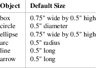
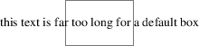
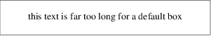
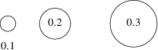
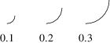

Sizes are specified in inches. If you don’t like inches, it’s possible to set a global style variable scale that changes the unit. Setting scale = 2.54 effectively changes the internal unit to centimeters (all other size variable values are scaled correspondingly).
Here are the default sizes for pic objects:

The simplest way to think about these defaults is that they make the other basic objects fit snugly into a default-sized box.
pic2plot(1) does not necessarily emit a physical inch for each virtual inch in its drawing coordinate system. Instead, it draws on a canvas 8 virtual inches by 8 virtual inches wide. If its output page size is “letter”, these virtual inches will map to real ones. Specifying a different page size (such as, say, “a4”) will scale virtual inches so they are output as one eighth of the page width. Also, pic2plot(1) centers all images by default, though the −n option can be used to prevent this.
Text is rendered in the current font with normal troff line spacing. Boxes, circles, and ellipses do not automatically resize to fit enclosed text. Thus, if you say box "this text far too long for a default box" you’ll get this:

Figure 4-1: Boxes do not automatically resize
which is probably not the effect you want.
To change the box size, you can specify a box width with the “width” modifier:

Figure 4-2: Result of box width 3
This modifier takes a dimension in inches. There is also a “height” modifier that changes a box’s height. The width keyword may be abbreviated to wid; the height keyword to ht.
To change the size of a circle, give it a rad[ius] or diam[eter] modifier; this changes the radius or diameter of the circle, according to the numeric argument that follows.

Figure 4-3: Circles with increasing radii
The move command can also take a dimension, which just tells it how many inches to move in the current direction.
Ellipses are sized to fit in the rectangular box defined by their axes, and can be resized with width and height like boxes.
You can also change the radius of curvature of an arc with rad[ius] (which specifies the radius of the circle of which the arc is a segment). Larger values yield flatter arcs.

Figure 4-4: arc rad with increasing radii
Observe that because an arc is defined as a quarter circle, increasing the radius also increases the size of the arc’s bounding box.
In place of a dimension specification, you can use the keyword same. This gives the object the same size as the previous one of its type. As an example, the program
.PS box; box wid 1 ht 1; box same; box .PE
gives you
Figure 4-5: The same keyword